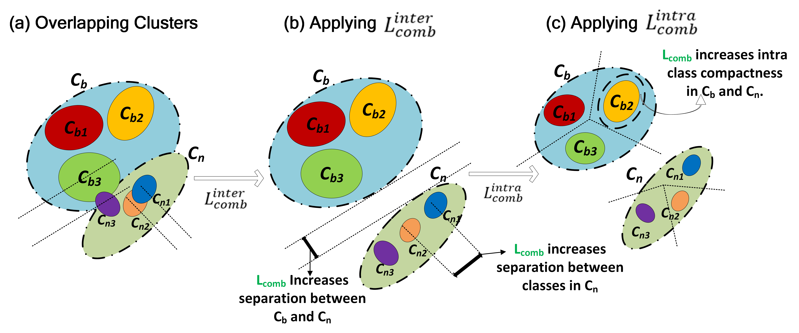

The SMILe Framework
SMILe introduces a paradigm shift in FSOD by imbibing a combinatorial viewpoint, where the base dataset,
\(𝐷_{𝑏𝑎𝑠𝑒}= \{ 𝐴_1^𝑏, 𝐴_2^𝑏, …, 𝐴_{|𝐶_𝑏|}^𝑏\}\), containing abundant training examples from \(𝐶_𝑏\) base classes
and the novel dataset, \(𝐷_{𝑛𝑜𝑣𝑒𝑙}=\{𝐴_1^𝑛, 𝐴_2^𝑛, …, 𝐴_{|𝐶_𝑛|}^𝑛\}\) containing only K-shot (\(𝐴_𝑖^𝑛 = 𝐾\)
for \(𝑖 \in [1, 𝐶_𝑛]\)) training examples from \(𝐶_𝑛\) novel classes.
The striking natural imbalance between number of samples in the base and the novel classes leads to confusion between
existing (base) and newly added (novel) few-shot classes. We trace the root cause for class confusion to large inter-class
bias between base and novel (K-shot) classes. This results in mis-classification of one or more base classes as novel ones.
Further, in a quest to learn the novel classes \(C_n\) the model seldom forgets feature representations corresponding to
the previously learnt base classes. Even though several techniques in FSOD adopt a replay technique (provide K-shot examples
of the base classes during few-shot adaptation) the lack of discriminative features results in catastrophic forgetting of
the base classes.

Figure 1: Application of SMILe on any existing approach which demonstrates (a)
confusion and forgetting, demonstrates (b) inter-cluster separation, removing class confusion and (c) Fostering intra-class
compactness, improving forgetting.
SMILe exploits the diminishing returns property of submodular functions to define a novel family of combinatorial objective
(loss) functions \(𝐿_{𝑐𝑜𝑚𝑏} (\theta)\) which enforces orthogonality in the feature space when applied on Region-of-Interest
(RoI) features in FSOD models. The loss function \(𝐿_𝑐𝑜𝑚𝑏 (\theta)\) can be decomposed into two major components -
\(𝑳_{𝒄𝒐𝒎𝒃}^{𝒊𝒏𝒕𝒆𝒓}\) which minimizes inter-class bias between base and novel classes and \(𝑳_{𝒄𝒐𝒎𝒃}^{𝒊𝒏𝒕𝒓𝒂}\)
maximizes intra-class compactness within abundant classes.
\(𝑳_{𝒄𝒐𝒎𝒃}^{𝒊𝒏𝒕𝒆𝒓}\) minimizes the mutual information between classes in \(𝐶_𝑛\), minimizing inter-cluster overlaps
between the novel classes. This has been shown to be effective in mitigating class confusion in FSOD.
\[ L_{comb}^{inter}(\theta) = \underset{\substack{b \in C_b \\ n \in C_n}}{\sum} I_f(A_b, A_n; \theta) + \underset{\substack{i, j \in C_n \\ i \neq j}}{\sum} I_f(A_i, A_j; \theta) = \underset{\substack{i \in (C_b \cup C_n) \\ j \in C_n : i \neq j}}{\sum}I_f(A_i, A_j; \theta)\]
\(𝐋_{𝐜𝐨𝐦𝐛}^{𝐢𝐧𝐭𝐫𝐚}\) minimizes the total submodular information within samples in each class in \(𝐶_𝑏 \cup C_𝑛\) boosting
base class performance asserting the mitigation of catastrophic forgetting.
\[L_{comb}^{intra}(\theta) = {\underset{b \in C_b}{\sum}} f(A_b, \theta) + {\underset{n \in C_n}{\sum}} f(A_n, \theta) = {\underset{k \in (C_b \cup C_n)}{\sum}} f(A_k, \theta)\]
Encapsulating \(𝐿_{𝑐𝑜𝑚𝑏}^{𝑖𝑛𝑡𝑟𝑎}\) and \(𝐿_{𝑐𝑜𝑚𝑏}^{𝑖𝑛𝑡𝑒𝑟}\) we define a joint objective \(𝐿_{𝑐𝑜𝑚𝑏}(\theta)\) which
tackles both the challenges of confusion and forgetting.
\begin{split}
L_{comb}(\theta) =& (1 - \eta) L_{comb}^{intra}(\theta) + \eta L_{comb}^{inter}(\theta) \\
=& {\underset{i \in C_b \cup C_n}{\sum}} \Biggl[(1 - \eta) f(A_i, \theta) + \eta \underset{\substack{j \in C_n \\ i \neq j}}{\sum}I_f(A_i, A_j; \theta) \Biggr]
\end{split}
The combined effect of \(L_{comb}^{inter}\) and \(L_{comb}^{intra}\) minimizes inter-class bias and intra-class variance
resulting in reduced class confusion and catastrophic forgetting.